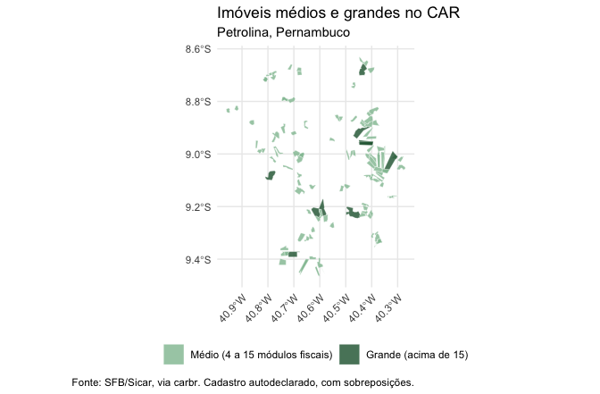

O Cadastro Ambiental Rural (CAR) é o registro
público eletrônico dos imóveis rurais do país, criado pelo Código
Florestal (Lei nº 12.651/2012) e mantido no Sicar pelo Serviço Florestal
Brasileiro. O carbr lê uma republicação dos dados públicos
do cadastro em GeoParquet: cada consulta transfere só os trechos do
arquivo de que precisa, sem baixar a base de um estado inteiro e sem
passar pelos servidores do Sicar.
| Função | Para quê |
|---|---|
car_catalog() |
O que está publicado |
car_dictionary() |
O que cada coluna significa |
car_municipalities() |
Resumo por município |
car_properties() |
Imóveis de uma UF, com filtros |
car_property() |
Um imóvel pelo código |
car_at() |
Imóveis que contêm um ponto |
car_tbl() |
Tabela preguiçosa para o dplyr
|
car_cite() |
Como citar |
O que está publicado
car_catalog() traz uma linha por UF, com o número de
imóveis e os indicadores de qualidade da carga. A versão é a data em que
os dados foram lidos do Sicar.
cat <- car_catalog()
cat
#> # A tibble: 1 × 6
#> state properties municipalities invalid_geometries null_geometries
#> <chr> <int> <int> <int> <int>
#> 1 PE 436190 184 50 0
#> registered_in_other_state
#> <int>
#> 1 7
attr(cat, "version")
#> [1] "2026-11-25"O dicionário de dados diz o que é cada coluna e qual era o seu nome no Sicar.
car_dictionary() |> print(n = 22)
#> # A tibble: 22 × 3
#> column sicar_name
#> <chr> <chr>
#> 1 property_code cod_imovel
#> 2 status_code status_imovel
#> 3 status <NA>
#> 4 condition condicao
#> 5 property_type_code tipo_imovel
#> 6 property_type <NA>
#> 7 created_at dat_criacao
#> 8 area_ha area
#> 9 fiscal_modules m_fiscal
#> 10 size_class <NA>
#> 11 state uf
#> 12 municipality municipio
#> 13 municipality_code cod_municipio_ibge
#> 14 registration_state <NA>
#> 15 lon <NA>
#> 16 lat <NA>
#> 17 geometry_valid <NA>
#> 18 xmin <NA>
#> 19 ymin <NA>
#> 20 xmax <NA>
#> 21 ymax <NA>
#> 22 geometry geo_area_imovel
#> description
#> <chr>
#> 1 Código do imóvel no CAR (UF-município IBGE-identificador).
#> 2 Situação do cadastro: AT ativo, PE pendente, SU suspenso, CA cancelado.
#> 3 Situação do cadastro por extenso, derivada de status_code.
#> 4 Etapa da análise em que o cadastro está, como informada pelo Sicar.
#> 5 IRU imóvel rural, AST assentamento, PCT povos e comunidades tradicionais.
#> 6 Tipo do imóvel por extenso, derivado de property_type_code.
#> 7 Data e hora de criação do cadastro (UTC).
#> 8 Área declarada do imóvel, em hectares.
#> 9 Área em módulos fiscais do município.
#> 10 small até 4 módulos fiscais, medium acima de 4 até 15, large acima de 15.
#> 11 UF onde o imóvel está localizado.
#> 12 Município onde o imóvel está localizado.
#> 13 Código IBGE do município (7 dígitos).
#> 14 UF do prefixo de property_code; pode diferir de state.
#> 15 Longitude de um ponto dentro do imóvel (SIRGAS 2000).
#> 16 Latitude de um ponto dentro do imóvel (SIRGAS 2000).
#> 17 Se a geometria declarada é válida (sem autointerseção etc.).
#> 18 Limite oeste do retângulo envolvente do imóvel, para filtro espacial na leit…
#> 19 Limite sul do retângulo envolvente.
#> 20 Limite leste do retângulo envolvente.
#> 21 Limite norte do retângulo envolvente.
#> 22 Perímetro declarado do imóvel, WKB, EPSG:4674. Nulo se o Sicar não traz.Resumo por município
Para contagens, não é preciso ler os imóveis: o resumo municipal é um arquivo pequeno, guardado em cache.
car_municipalities("PE") |>
arrange(desc(properties)) |>
select(municipality, properties, small_properties, area_ha, pending)
#> # A tibble: 184 × 5
#> municipality properties small_properties area_ha pending
#> <chr> <int> <int> <dbl> <int>
#> 1 Araripina 15663 15625 187423. 1
#> 2 Ouricuri 14200 14182 219157. 6
#> 3 Petrolina 10918 10799 411153. 11
#> 4 Buíque 9734 9651 109496. 3
#> 5 Bodocó 7271 7236 147941. 2
#> 6 Custódia 6598 6540 153166. 1
#> # ℹ 178 more rowsImóveis de um município
Os filtros de car_properties() são aplicados antes da
leitura. Aqui, os imóveis médios e grandes de Petrolina — algumas
centenas, de um arquivo com mais de 400 mil. Com o pacote
sf instalado, o resultado é um objeto sf em
SIRGAS 2000.
petrolina <- car_properties(
"PE",
municipality = "Petrolina",
size_class = c("medium", "large")
)
petrolina |> select(property_code, status, area_ha, fiscal_modules, size_class)
#> Simple feature collection with 119 features and 5 fields
#> Geometry type: MULTIPOLYGON
#> Dimension: XY
#> Bounding box: xmin: -40.96095 ymin: -9.465393 xmax: -40.26997 ymax: -8.629952
#> Geodetic CRS: SIRGAS 2000
#> # A tibble: 119 × 6
#> property_code status area_ha fiscal_modules
#> <chr> <chr> <dbl> <dbl>
#> 1 PE-2611101-111805B2DFBA4AF7B2BE2458D8CE27FD active 652. 11.6
#> 2 PE-2611101-B095898582B2428EBDD3200C7CA25992 active 245. 4.46
#> 3 PE-2611101-69A386072C4E4D3189F24800452142C1 active 246. 4.47
#> 4 PE-2611101-C283CE3BF96A440DBE8D9026B91FC2C1 active 535. 9.73
#> 5 PE-2611101-ADEC18D9D8EA4CB6B5A3F56074EA0B63 active 432. 7.86
#> 6 PE-2611101-03F43B55FBE64453A6F2F740902D02CB active 804. 14.6
#> size_class geometry
#> <chr> <MULTIPOLYGON [°]>
#> 1 medium (((-40.75303 -9.397993, -40.75799 -9.422049, -40.73045 -9.4222, -4…
#> 2 medium (((-40.61826 -9.430964, -40.61285 -9.428212, -40.59929 -9.464471, …
#> 3 medium (((-40.60167 -9.465393, -40.59937 -9.464515, -40.60074 -9.461139, …
#> 4 medium (((-40.59909 -9.395273, -40.59908 -9.395334, -40.59844 -9.395319, …
#> 5 medium (((-40.67597 -9.459559, -40.64619 -9.406101, -40.65469 -9.401102, …
#> 6 medium (((-40.68179 -9.449823, -40.67185 -9.431734, -40.65942 -9.409054, …
#> # ℹ 113 more rows
ggplot(petrolina) +
geom_sf(aes(fill = size_class), colour = "white", linewidth = 0.1, alpha = 0.8) +
scale_fill_manual(
values = c(medium = "#8fbf9f", large = "#1f5f3a"),
breaks = c("medium", "large"),
labels = c(medium = "Médio (4 a 15 módulos fiscais)", large = "Grande (acima de 15)"),
name = NULL
) +
labs(
title = "Imóveis médios e grandes no CAR",
subtitle = "Petrolina, Pernambuco",
caption = "Fonte: SFB/Sicar, via carbr. Cadastro autodeclarado, com sobreposições."
) +
theme_minimal() +
theme(legend.position = "bottom", axis.text.x = element_text(angle = 45, hjust = 1))
plot of chunk petrolina
O município pode ser dado pelo nome (sem diferenciar maiúsculas nem
acentos) ou pelo código IBGE de sete dígitos. Os outros filtros são
status, property_type e bbox.
Sem a geometria
A geometria é a parte pesada do arquivo. Quando só os atributos
interessam, geometry = FALSE deixa de transferi-la. Os
cadastros pendentes de Pernambuco, por município:
pending <- car_properties("PE", status = "pending", geometry = FALSE)
pending |> count(municipality, sort = TRUE)
#> # A tibble: 100 × 2
#> municipality n
#> <chr> <int>
#> 1 Carnaubeira da Penha 145
#> 2 Floresta 104
#> 3 Águas Belas 59
#> 4 Pesqueira 35
#> 5 Jatobá 28
#> 6 Tupanatinga 23
#> # ℹ 94 more rowsQue imóveis estão declarados aqui?
car_at() devolve os imóveis que contêm um ponto. Como o
cadastro é autodeclarado, sobreposições são comuns e o resultado pode
ter mais de uma linha.
car_at(lon = -40.5, lat = -9.2) |>
sf::st_drop_geometry() |>
select(property_code, municipality, area_ha, status, condition)
#> # A tibble: 1 × 5
#> property_code municipality area_ha status
#> <chr> <chr> <dbl> <chr>
#> 1 PE-2611101-588BC484570D440484F527F07DF5AFFA Petrolina 81579. active
#> condition
#> <chr>
#> 1 Aguardando análiseUm imóvel pelo código
car_property("PE-2611101-588BC484570D440484F527F07DF5AFFA", geometry = FALSE) |>
glimpse()
#> Rows: 1
#> Columns: 21
#> $ property_code <chr> "PE-2611101-588BC484570D440484F527F07DF5AFFA"
#> $ status_code <chr> "AT"
#> $ status <chr> "active"
#> $ condition <chr> "Aguardando análise"
#> $ property_type_code <chr> "AST"
#> $ property_type <chr> "settlement"
#> $ created_at <dttm> 2026-02-13 16:21:54
#> $ area_ha <dbl> 81578.6
#> $ fiscal_modules <dbl> 0.5209
#> $ size_class <chr> "small"
#> $ state <chr> "PE"
#> $ municipality <chr> "Petrolina"
#> $ municipality_code <int> 2611101
#> $ registration_state <chr> "PE"
#> $ lon <dbl> -40.55024
#> $ lat <dbl> -9.131521
#> $ geometry_valid <lgl> TRUE
#> $ xmin <dbl> -40.82484
#> $ ymin <dbl> -9.398057
#> $ xmax <dbl> -40.29828
#> $ ymax <dbl> -8.864982Consultas próprias
car_tbl() devolve uma tabela preguiçosa do
dplyr sobre os arquivos publicados. Nada é lido até o
collect(), e a agregação roda sobre o arquivo remoto lendo
só as colunas usadas.
Como citar
car_cite()
#> Serviço Florestal Brasileiro. Sistema Nacional de Cadastro Ambiental Rural
#> (Sicar): imóveis rurais. Dados organizados pelo CastLab/UFPE (pacote carbr),
#> versão 2026-11-25.Endereço dos dados e cache
O pacote lê de um bucket público. Para usar um espelho compatível com
S3 ou uma cópia local da publicação, defina
options(carbr.base_url = ) ou a variável de ambiente
CAR_URL. O catálogo e o resumo municipal ficam em cache em
car_cache_dir(); os imóveis nunca são copiados para o
disco.